2026-11-28 02:41 UTCSoupçonné d’être ivre après un carton jaune improbable et remplacé lors d’un match de Ligue des champions asiatique, l’arbitre se défend
🚨 Soupçonné d’être ivre après un carton jaune improbable et remplacé lors d’un match de Ligue des champions asiatique, l’arbitre se défend
📰 Source : Le Parisien Sport
#Football #Actu
 Lire la suite →2026-11-28 02:41 UTC
Lire la suite →2026-11-28 02:41 UTCDIRECT. PSG : « Lamine Yamal ne viendra pas à Paris cet hiver »
🚨 DIRECT. PSG : « Lamine Yamal ne viendra pas à Paris cet hiver »
📰 Source : Le Parisien Sport
#Football #Actu
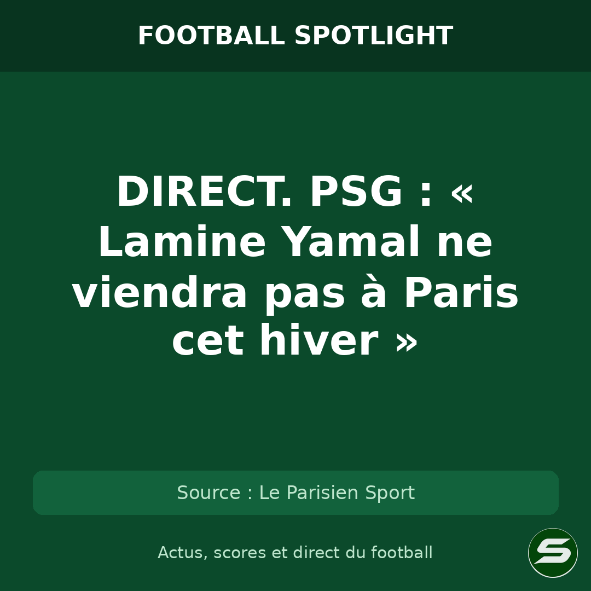
Lire la suite →2026-11-28 02:41 UTCLa renaissance de Cyprien Sarrazin, le skieur qui a frôlé la mort : « Ça s’est joué à quelques heures près »
🚨 La renaissance de Cyprien Sarrazin, le skieur qui a frôlé la mort : « Ça s’est joué à quelques heures près »
📰 Source : Le Parisien Sport
#Football #Actu
 Lire la suite →2026-11-28 02:41 UTC
Lire la suite →2026-11-28 02:41 UTC« Vos données risquent d’être publiées » : la Ligue nationale de basket victime d’une cyberattaque... annoncée par une notification sur son application
🚨 « Vos données risquent d’être publiées » : la Ligue nationale de basket victime d’une cyberattaque... annoncée par une notification sur son application
📰 Source : Le Parisien Sport
#Football #Actu
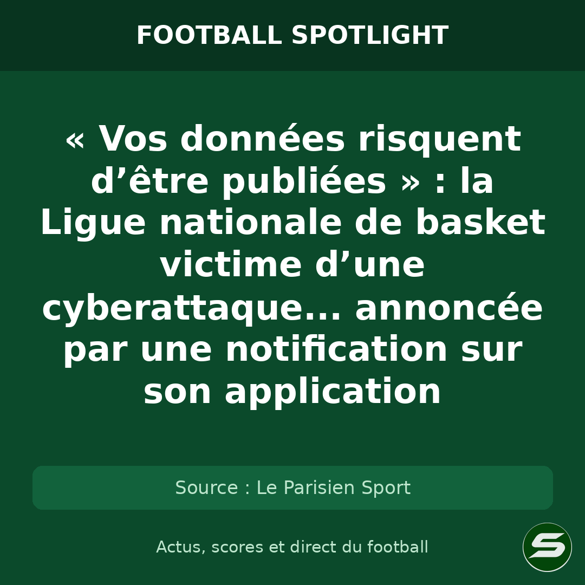
Lire la suite →2026-11-28 02:41 UTC« Inacceptable », « absolument incompréhensible » : Joshua Kimmich dénonce la communication du Bayern Munich sur Jamal Musiala
🚨 « Inacceptable », « absolument incompréhensible » : Joshua Kimmich dénonce la communication du Bayern Munich sur Jamal Musiala
📰 Source : Le Parisien Sport
#Football #Actu
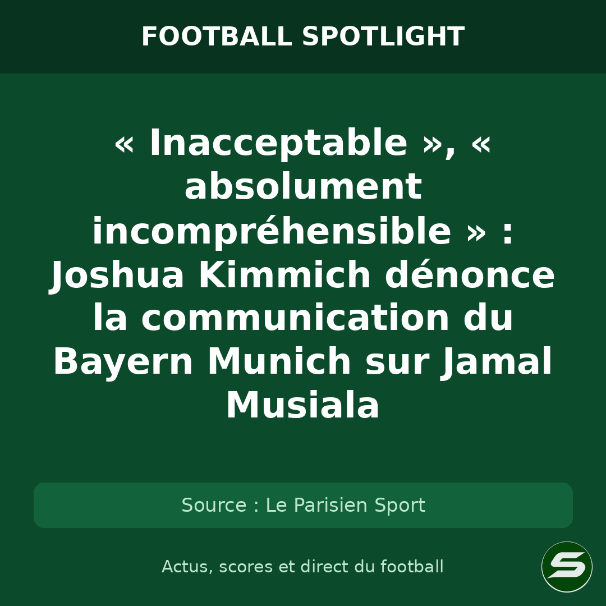
Lire la suite →2026-11-28 02:41 UTCÀ Portland, Sidy Cissoko inflige un poster dunk à son ex-coéquipier Victor Wembanyama lors de la défaite des Spurs
🚨 À Portland, Sidy Cissoko inflige un poster dunk à son ex-coéquipier Victor Wembanyama lors de la défaite des Spurs
📰 Source : Le Parisien Sport
#Football #Actu
Lire la suite →2026-11-28 02:11 UTCNBA : avec son premier triple-double à Philadelphie, LeBron James s’offre un nouveau record à bientôt 42 ans
🚨 NBA : avec son premier triple-double à Philadelphie, LeBron James s’offre un nouveau record à bientôt 42 ans
📰 Source : Le Parisien Sport
#Football #Actu
 Lire la suite →2026-11-28 02:11 UTC
Lire la suite →2026-11-28 02:11 UTC« Émilien va nous manquer » : l’absence de Jacquelin, ses ambitions pour la saison de biathlon… Éric Perrot se confie
🚨 « Émilien va nous manquer » : l’absence de Jacquelin, ses ambitions pour la saison de biathlon… Éric Perrot se confie
📰 Source : Le Parisien Sport
#Football #Actu
 Lire la suite →2026-11-28 02:11 UTC
Lire la suite →2026-11-28 02:11 UTCTennis : après son opération du genou, Jannik Sinner officiellement forfait pour l’Open d’Australie
🚨 Tennis : après son opération du genou, Jannik Sinner officiellement forfait pour l’Open d’Australie
📰 Source : Le Parisien Sport
#Football #Actu
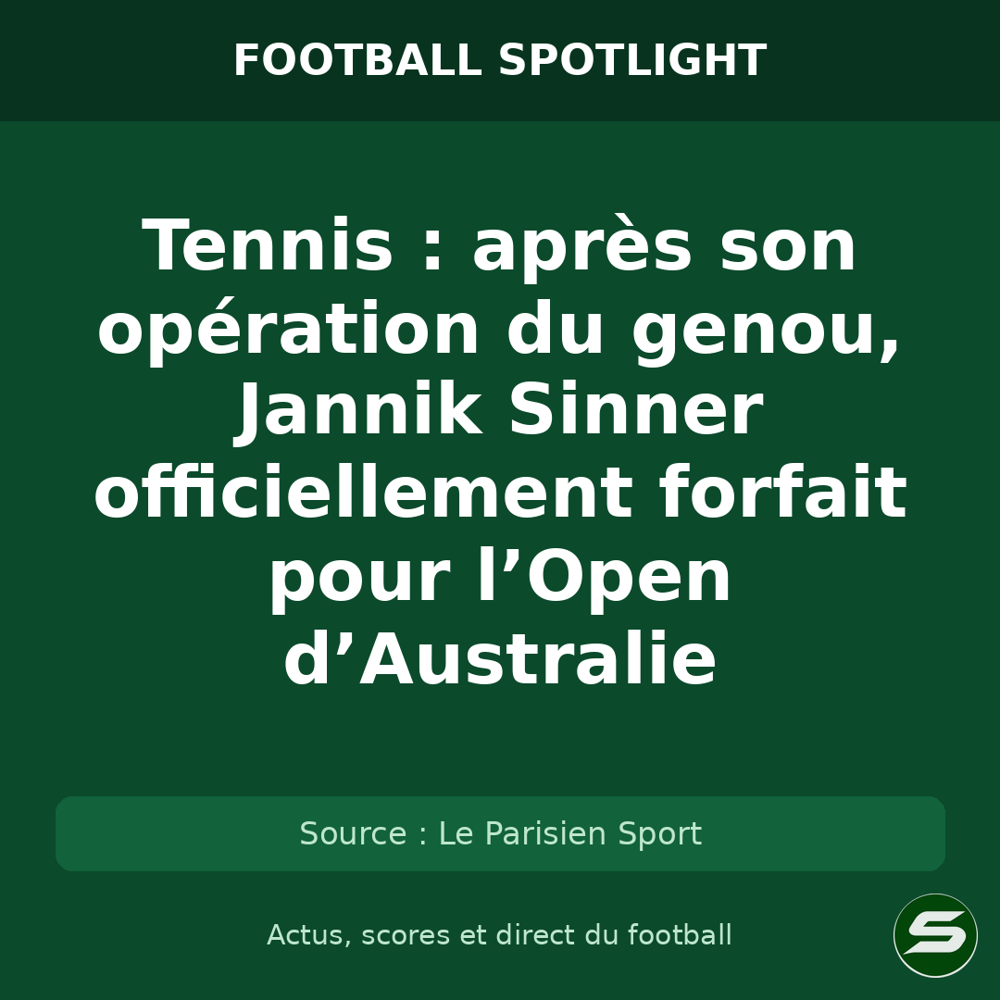
Lire la suite →2026-11-28 02:11 UTCPSG-AS Rome : des supporters romains accusés d’avoir lancé des cris de singe et des insultes racistes
🚨 PSG-AS Rome : des supporters romains accusés d’avoir lancé des cris de singe et des insultes racistes
📰 Source : Le Parisien Sport
#Football #Actu
Lire la suite →2026-11-28 02:11 UTCPSG-AS Rome (2-2) : « Ce sont des seconds couteaux », Daniel Xuereb pointe du doigt les remplaçants de Doué et Kvaratskhelia
🚨 PSG-AS Rome (2-2) : « Ce sont des seconds couteaux », Daniel Xuereb pointe du doigt les remplaçants de Doué et Kvaratskhelia
📰 Source : Le Parisien Sport
#Football #Actu
Lire la suite →2026-11-28 02:11 UTC« On n’a pas été à notre niveau » : au PSG, le match nul contre la Roma ne rassure personne
🚨 « On n’a pas été à notre niveau » : au PSG, le match nul contre la Roma ne rassure personne
📰 Source : Le Parisien Sport
#Football #Actu
 Lire la suite →2026-11-28 01:41 UTC
Lire la suite →2026-11-28 01:41 UTCComment Armelle et Léana ont retrouvé la propriétaire d’un pendentif des JO, perdu depuis un an, grâce… à un colis en brocante
🚨 Comment Armelle et Léana ont retrouvé la propriétaire d’un pendentif des JO, perdu depuis un an, grâce… à un colis en brocante
📰 Source : Le Parisien Sport
#Football #Actu
 Lire la suite →2026-11-28 01:41 UTC
Lire la suite →2026-11-28 01:41 UTCPSG-AS Rome : « Quels que soient les joueurs, on aurait eu des difficultés », estime Luis Enrique
🚨 PSG-AS Rome : « Quels que soient les joueurs, on aurait eu des difficultés », estime Luis Enrique
📰 Source : Le Parisien Sport
#Football #Actu
 Lire la suite →2026-11-28 01:41 UTC
Lire la suite →2026-11-28 01:41 UTCLille-Bayern Munich (2-1) : l’exploit des Dogues pour empocher leur première victoire en Ligue des champions face à l’ogre bavarois
🚨 Lille-Bayern Munich (2-1) : l’exploit des Dogues pour empocher leur première victoire en Ligue des champions face à l’ogre bavarois
📰 Source : Le Parisien Sport
#Football #Actu
 Lire la suite →2026-11-28 01:41 UTC
Lire la suite →2026-11-28 01:41 UTCPSG-AS Rome (2-2) : titulaire surprise, Zabarnyi confirme sa montée en puissance
🚨 PSG-AS Rome (2-2) : titulaire surprise, Zabarnyi confirme sa montée en puissance
📰 Source : Le Parisien Sport
#Football #Actu
Lire la suite →2026-11-28 01:41 UTCFluminense 0 - 1 Cruzeiro
⏱️ TERMINÉ
⚽ FLUMINENSE 0 - 1 CRUZEIRO
✅ Victoire de Cruzeiro
🏆 Campeonato Brasileiro Série A · Journée 37
#Football #CampeonatoBrasileiroSérieA
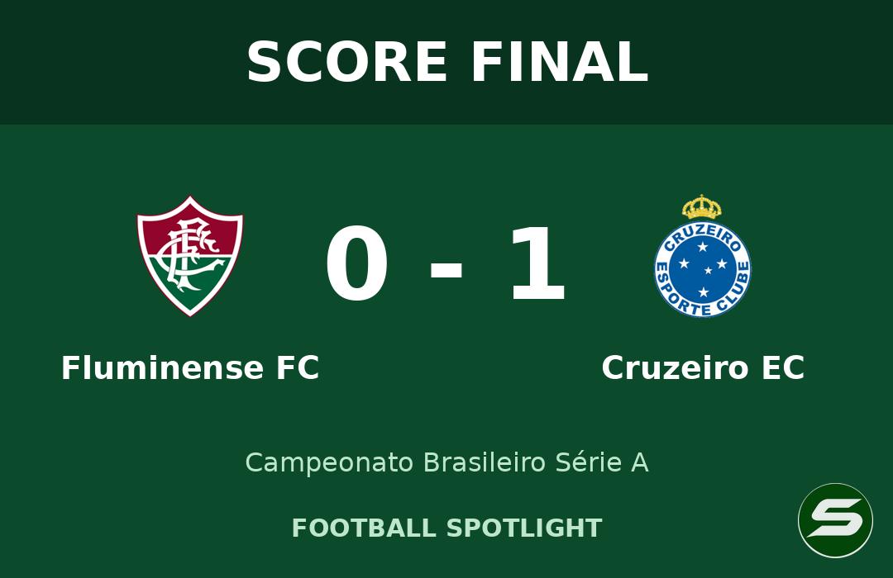
2026-11-28 01:41 UTCMarítimo 1 - 2 CD Nacional
⏱️ TERMINÉ
⚽ MARÍTIMO 1 - 2 CD NACIONAL
✅ Victoire de CD Nacional
🏆 Primeira Liga · Journée 12
#Football #PrimeiraLiga
 2026-11-28 01:11 UTC
2026-11-28 01:11 UTCPSG-AS Rome (2-2) : les notes des Parisiens avec Hakimi très remuant, Akliouche et Torres en difficulté
🚨 PSG-AS Rome (2-2) : les notes des Parisiens avec Hakimi très remuant, Akliouche et Torres en difficulté
📰 Source : Le Parisien Sport
#Football #Actu
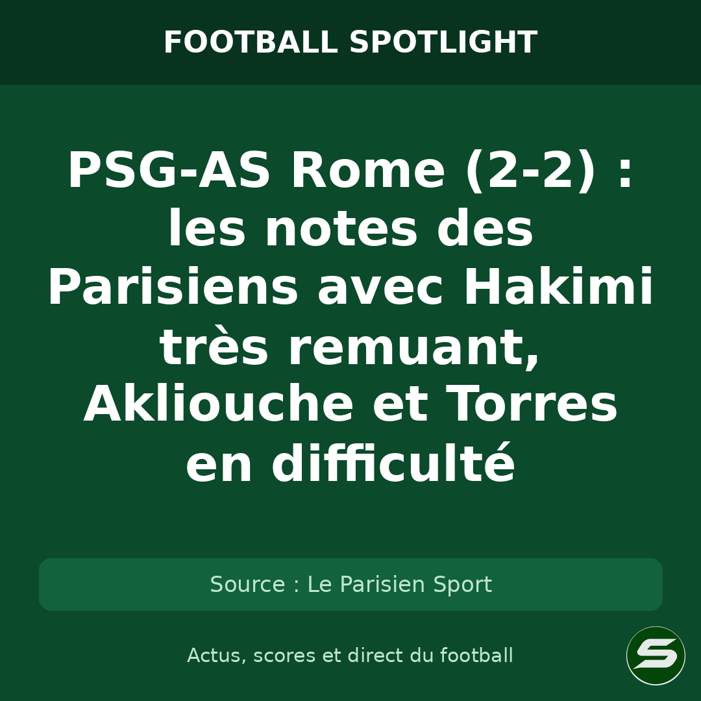
Lire la suite →2026-11-28 01:11 UTCPSG-AS Rome (2-2) : Paris tombe sur un os
🚨 PSG-AS Rome (2-2) : Paris tombe sur un os
📰 Source : Le Parisien Sport
#Football #Actu
Lire la suite →2026-11-28 01:11 UTCLille - Bayern Munich : la vidéo du but gag qui permet aux Dogues de signer l’exploit
🚨 Lille - Bayern Munich : la vidéo du but gag qui permet aux Dogues de signer l’exploit
📰 Source : Le Parisien Sport
#Football #Actu
Lire la suite →2026-11-28 01:11 UTC« Mon cerveau a oublié et ça m’a échappé » : la nouvelle règle du biathlon qui bouscule les athlètes sur le pas de tir
🚨 « Mon cerveau a oublié et ça m’a échappé » : la nouvelle règle du biathlon qui bouscule les athlètes sur le pas de tir
📰 Source : Le Parisien Sport
#Football #Actu
Lire la suite →2026-11-28 01:11 UTCPSG - AS Roma : l’égalisation de Zabarnyi en vidéo, sixième but sur corner des Parisiens en Ligue des champions
🚨 PSG - AS Roma : l’égalisation de Zabarnyi en vidéo, sixième but sur corner des Parisiens en Ligue des champions
📰 Source : Le Parisien Sport
#Football #Actu
 Lire la suite →2026-11-28 01:11 UTC
Lire la suite →2026-11-28 01:11 UTC« Hier, le mauvais perdant, le compétiteur a parlé » : la mise au point de Florian Thauvin au lendemain de son interview polémique
🚨 « Hier, le mauvais perdant, le compétiteur a parlé » : la mise au point de Florian Thauvin au lendemain de son interview polémique
📰 Source : Le Parisien Sport
#Football #Actu
 Lire la suite →2026-11-28 00:41 UTC
Lire la suite →2026-11-28 00:41 UTCBasket : la NBA dévoile un plan de 10 milliards d’euros pour le développement « des salles modernes » en Europe
🚨 Basket : la NBA dévoile un plan de 10 milliards d’euros pour le développement « des salles modernes » en Europe
📰 Source : Le Parisien Sport
#Football #Actu
Lire la suite →2026-11-28 00:41 UTCFootball : un biopic sur Zinedine Zidane en préparation à Marseille ?
🚨 Football : un biopic sur Zinedine Zidane en préparation à Marseille ?
📰 Source : Le Parisien Sport
#Football #Actu
 Lire la suite →2026-11-28 00:41 UTC
Lire la suite →2026-11-28 00:41 UTCSouthampton 2 - 0 Middlesbrough
⏱️ TERMINÉ
⚽ SOUTHAMPTON 2 - 0 MIDDLESBROUGH
✅ Victoire de Southampton
🏆 Championship · Journée 18
#Football #Championship
 2026-11-28 00:41 UTC
2026-11-28 00:41 UTCLevante 1 - 3 Santander
⏱️ TERMINÉ
⚽ LEVANTE 1 - 3 SANTANDER
✅ Victoire de Santander
🏆 Primera Division · Journée 14
#Football #PrimeraDivision
 2026-11-28 00:41 UTC
2026-11-28 00:41 UTCNottingham 3 - 2 Chelsea
⏱️ TERMINÉ
⚽ NOTTINGHAM 3 - 2 CHELSEA
✅ Victoire de Nottingham
🏆 Premier League · Journée 12
#Football #PremierLeague
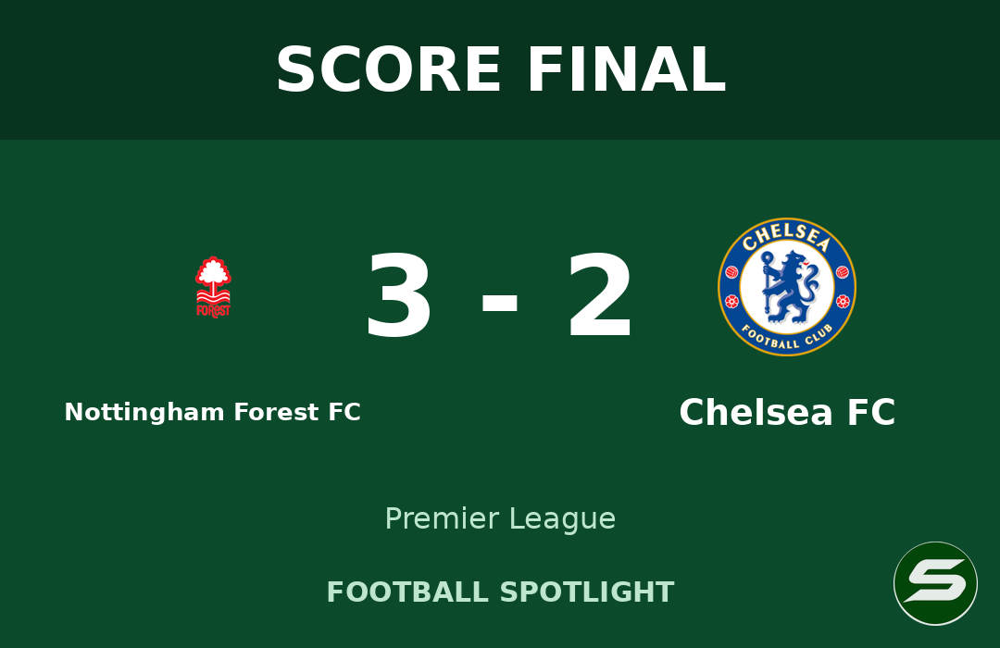
2026-11-28 00:41 UTCVenezia FC 0 - 0 Bologna
⏱️ TERMINÉ
⚽ VENEZIA FC 0 - 0 BOLOGNA
🤝 Match nul
🏆 Serie A · Journée 13
#Football #SerieA
 2026-11-28 00:11 UTC
2026-11-28 00:11 UTCPSG-AS Rome : la composition officielle des Parisiens avec Mayulu en attaque et Dembélé sur le banc
🚨 PSG-AS Rome : la composition officielle des Parisiens avec Mayulu en attaque et Dembélé sur le banc
📰 Source : Le Parisien Sport
#Football #Actu
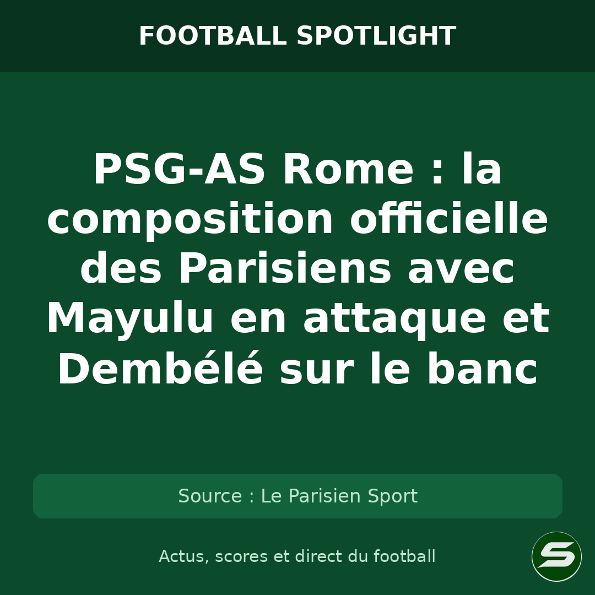
Lire la suite →2026-11-28 00:11 UTCLille-Bayern Munich (2-1) : le résumé de l'exploit des Dogues qui se relancent dans la course aux barrages
🚨 Lille-Bayern Munich (2-1) : le résumé de l'exploit des Dogues qui se relancent dans la course aux barrages
📰 Source : Le Parisien Sport
#Football #Actu
 Lire la suite →2026-11-28 00:11 UTC
Lire la suite →2026-11-28 00:11 UTCBrest 1 - 0 Paris FC
⏱️ TERMINÉ
⚽ BREST 1 - 0 PARIS FC
✅ Victoire de Brest
🏆 Ligue 1 · Journée 12
#Football #Ligue1
 2026-11-28 00:11 UTC
2026-11-28 00:11 UTCBremen 3 - 3 M'gladbach
⏱️ TERMINÉ
⚽ BREMEN 3 - 3 M'GLADBACH
🤝 Match nul
🏆 Bundesliga · Journée 11
#Football #Bundesliga
 2026-11-28 00:11 UTC
2026-11-28 00:11 UTCGroningen 1 - 1 Willem II
⏱️ TERMINÉ
⚽ GRONINGEN 1 - 1 WILLEM II
🤝 Match nul
🏆 Eredivisie · Journée 14
#Football #Eredivisie
 2026-11-28 00:11 UTC
2026-11-28 00:11 UTCMatchs du samedi 28 novembre 2026
📅 MATCHS DU JOUR – samedi 28 novembre 2026
🕒 12:30 – Lincoln City vs Wolverhampton (Championship)
🕒 12:30 – Blackburn vs Charlton (Championship)
🕒 12:30 – Preston NE vs Norwich (Championship)
🕒 13:00 – Real Betis vs Rayo Vallecano (Primera Division)
🕒 14:00 – Frosinone vs Parma (Serie A)
🕒 14:30 – SC Paderborn vs Schalke (Bundesliga)
🕒 14:30 – 1. FC Köln vs Elversberg (Bundesliga)
🕒 14:30 – HSV vs Bayern (Bundesliga)
🕒 14:30 – Mainz vs Union Berlin (Bundesliga)
🕒 15:00 – West Ham vs Stoke (Championship)
🕒 15:00 – Man United vs Brentford (Premier League)
🕒 15:00 – Birmingham vs Bolton (Championship)
🕒 15:00 – QPR vs Sheffield Utd (Championship)
🕒 15:00 – Leeds United vs Coventry City (Premier League)
🕒 15:00 – Wrexham vs Portsmouth (Championship)
🔥 Bon match à tous !
#Football
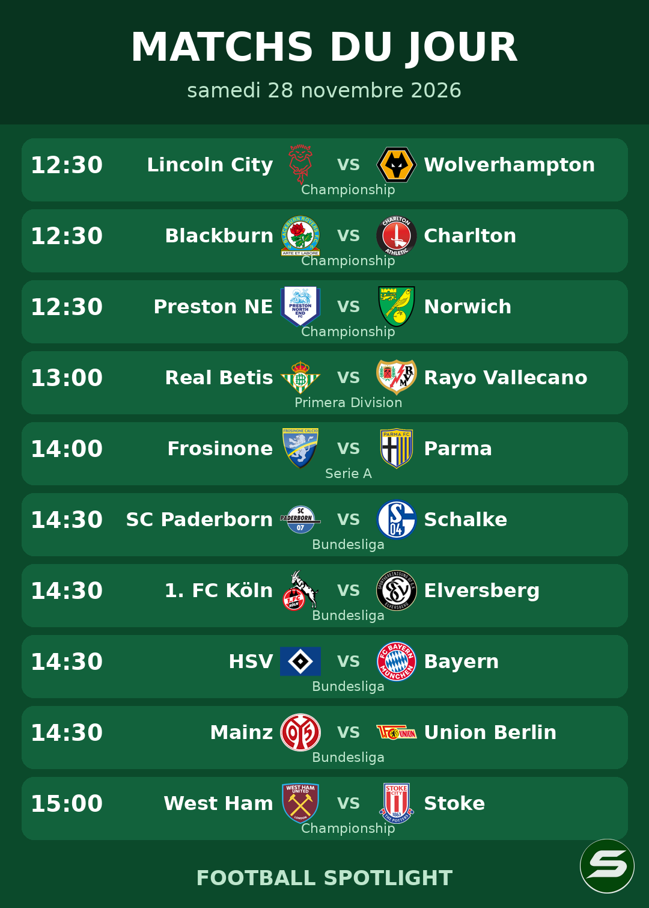
2026-11-27 22:00 UTCLevante 1 - 3 Santander
⚽ BUUUT ! Santander marque.
📊 Levante 1 - 3 Santander
🏆 Primera Division
#Football #PrimeraDivision #Direct
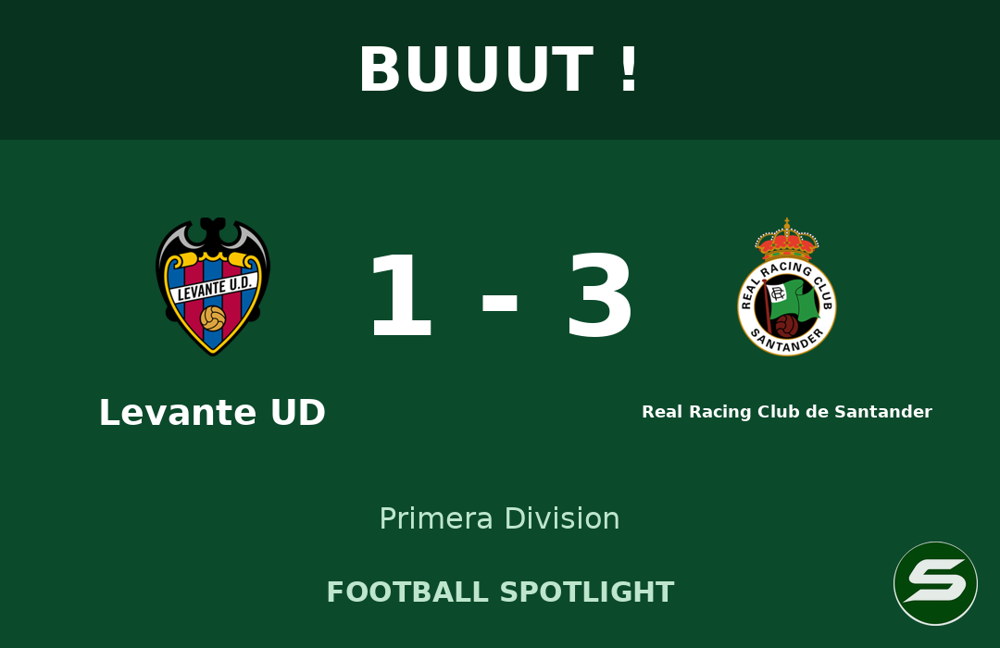
2026-11-27 21:54 UTCNottingham 3 - 2 Chelsea
⚽ BUUUT ! Chelsea marque.
📊 Nottingham 3 - 2 Chelsea
🏆 Premier League
#Football #PremierLeague #Direct
 2026-11-27 21:46 UTC
2026-11-27 21:46 UTCLevante 1 - 2 Santander
⚽ BUUUT ! Santander marque.
📊 Levante 1 - 2 Santander
🏆 Primera Division
#Football #PrimeraDivision #Direct
 2026-11-27 21:37 UTC
2026-11-27 21:37 UTCNottingham 3 - 1 Chelsea
⚽ BUUUT ! Nottingham marque.
📊 Nottingham 3 - 1 Chelsea
🏆 Premier League
#Football #PremierLeague #Direct
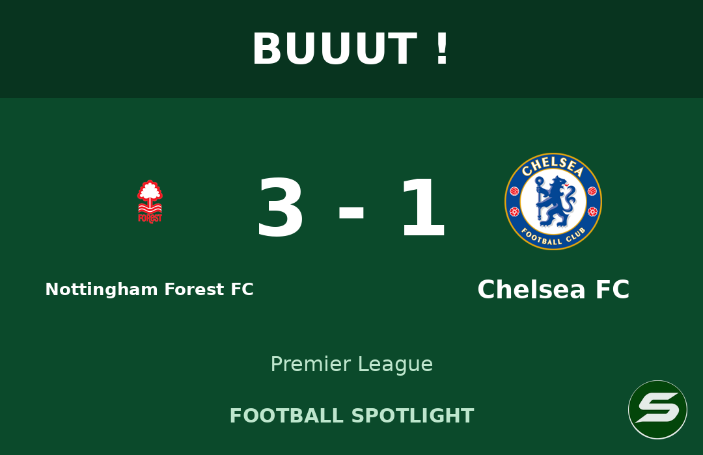
2026-11-27 21:32 UTCLevante 1 - 1 Santander
⚽ BUUUT ! Santander marque.
📊 Levante 1 - 1 Santander
🏆 Primera Division
#Football #PrimeraDivision #Direct
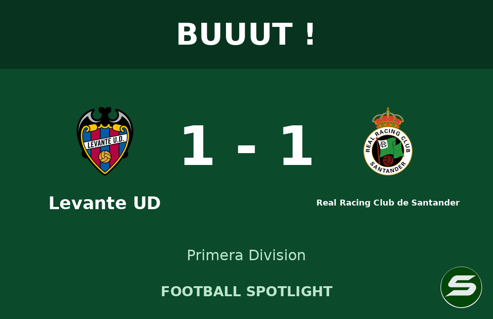
2026-11-27 21:28 UTCBremen 3 - 3 M'gladbach
⚽ BUUUT ! Bremen marque.
📊 Bremen 3 - 3 M'gladbach
🏆 Bundesliga
#Football #Bundesliga #Direct
 2026-11-27 21:22 UTC
2026-11-27 21:22 UTCBremen 2 - 3 M'gladbach
⚽ BUUUT ! Bremen marque.
📊 Bremen 2 - 3 M'gladbach
🏆 Bundesliga
#Football #Bundesliga #Direct
 2026-11-27 21:18 UTC
2026-11-27 21:18 UTCNottingham 2 - 1 Chelsea
⚽ BUUUT ! Chelsea marque.
📊 Nottingham 2 - 1 Chelsea
🏆 Premier League
#Football #PremierLeague #Direct
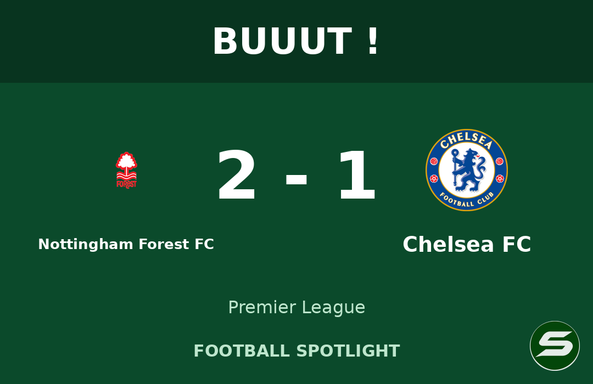
2026-11-27 21:16 UTCNottingham 2 - 0 Chelsea
⚽ BUUUT ! Nottingham marque.
📊 Nottingham 2 - 0 Chelsea
🏆 Premier League
#Football #PremierLeague #Direct
 2026-11-27 21:16 UTC
2026-11-27 21:16 UTCBremen 1 - 3 M'gladbach
⚽ BUUUT ! M'gladbach marque.
📊 Bremen 1 - 3 M'gladbach
🏆 Bundesliga
#Football #Bundesliga #Direct
 2026-11-27 20:50 UTC
2026-11-27 20:50 UTCLevante 1 - 0 Santander
⚽ BUUUT ! Levante marque.
📊 Levante 1 - 0 Santander
🏆 Primera Division
#Football #PrimeraDivision #Direct
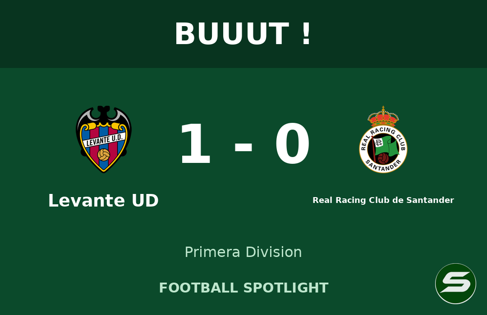
2026-11-27 20:45 UTCBremen 1 - 2 M'gladbach
⚽ BUUUT ! M'gladbach marque.
📊 Bremen 1 - 2 M'gladbach
🏆 Bundesliga
#Football #Bundesliga #Direct
 2026-11-27 20:15 UTC
2026-11-27 20:15 UTCBremen 1 - 1 M'gladbach
⚽ BUUUT ! Bremen marque.
📊 Bremen 1 - 1 M'gladbach
🏆 Bundesliga
#Football #Bundesliga #Direct
 2026-11-27 20:12 UTC
2026-11-27 20:12 UTCNottingham 1 - 0 Chelsea
⚽ BUUUT ! Nottingham marque.
📊 Nottingham 1 - 0 Chelsea
🏆 Premier League
#Football #PremierLeague #Direct
2026-11-27 20:12 UTCBrest 1 - 0 Paris FC
⚽ BUUUT ! Brest marque.
📊 Brest 1 - 0 Paris FC
🏆 Ligue 1
#Football #Ligue1 #Direct
 2026-11-27 20:05 UTC
2026-11-27 20:05 UTCVenezia FC 1 - 0 Bologna
⚽ BUUUT ! Venezia FC marque.
📊 Venezia FC 1 - 0 Bologna
🏆 Serie A
#Football #SerieA #Direct
 2026-11-27 20:03 UTC
2026-11-27 20:03 UTCBremen 0 - 1 M'gladbach
⚽ BUUUT ! M'gladbach marque.
📊 Bremen 0 - 1 M'gladbach
🏆 Bundesliga
#Football #Bundesliga #Direct
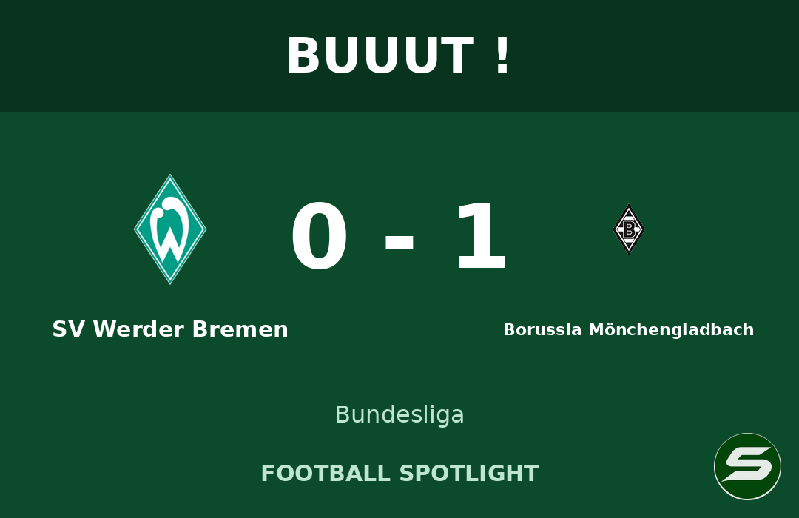
2026-11-27 14:21 UTCPSG : un fond blanc, des ailes noires… Le maillot « Wings » en passe de faire son retour ?
🚨 PSG : un fond blanc, des ailes noires… Le maillot « Wings » en passe de faire son retour ?
📰 Source : Le Parisien Sport
#Football #Actu
 Lire la suite →2026-11-27 14:21 UTC
Lire la suite →2026-11-27 14:21 UTCPSG-AS Rome (2-2) : le résumé du match nul des Parisiens, qui ont perdu leurs premiers points en Ligue des champions
🚨 PSG-AS Rome (2-2) : le résumé du match nul des Parisiens, qui ont perdu leurs premiers points en Ligue des champions
📰 Source : Le Parisien Sport
#Football #Actu
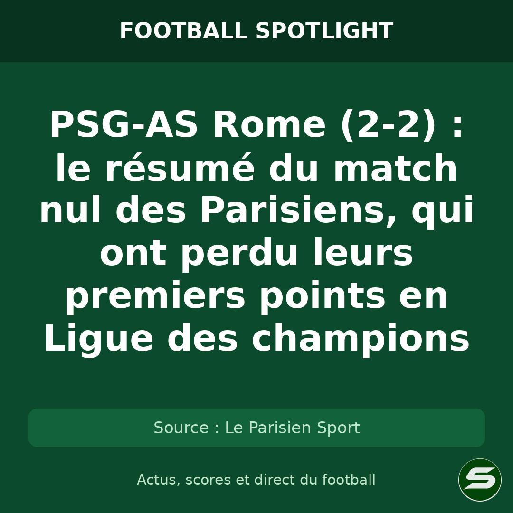
Lire la suite →2026-11-27 14:21 UTCPSG Youth League-AS Rome (1-2) : une défaite au goût amer pour les Titis
🚨 PSG Youth League-AS Rome (1-2) : une défaite au goût amer pour les Titis
📰 Source : Le Parisien Sport
#Football #Actu
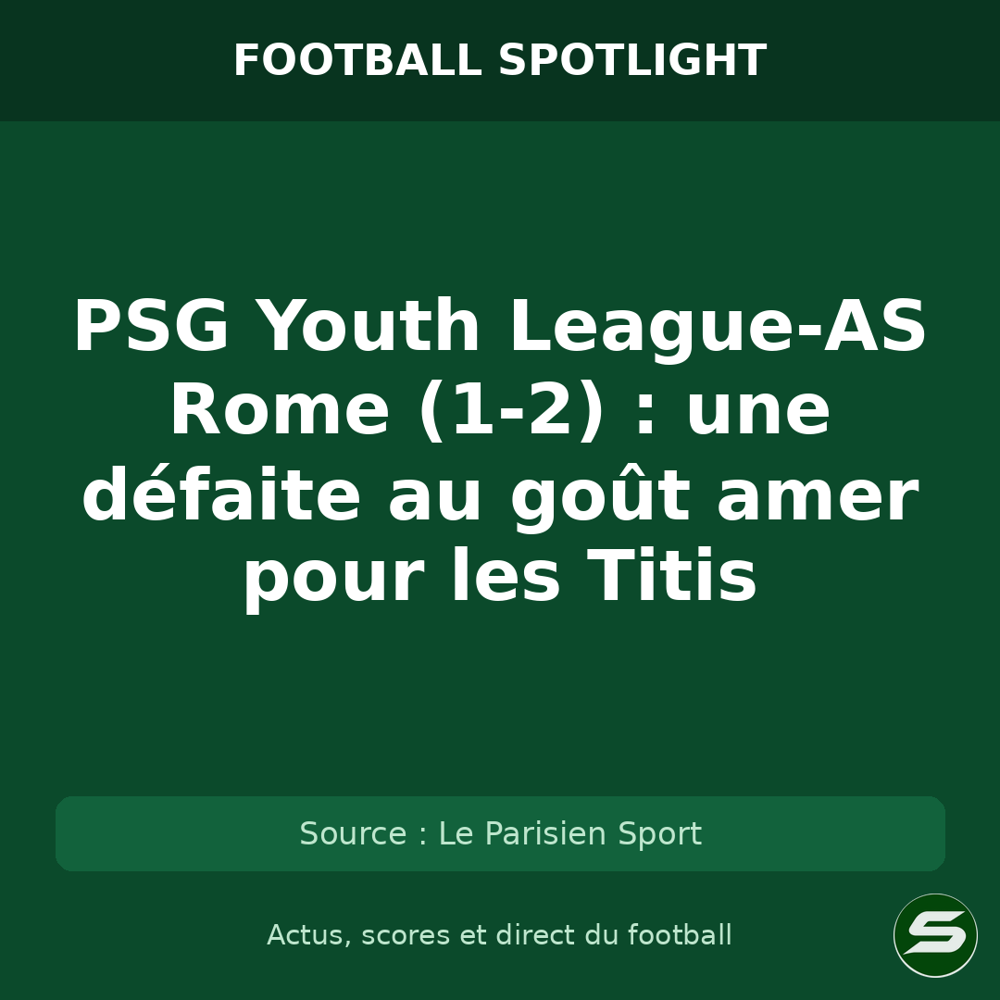
Lire la suite →2026-11-27 14:20 UTC« J’aime bien la tomate, t’as un problème ? » : Burger King dévoile le bêtisier de sa publicité avec Didier Deschamps
🚨 « J’aime bien la tomate, t’as un problème ? » : Burger King dévoile le bêtisier de sa publicité avec Didier Deschamps
📰 Source : Le Parisien Sport
#Football #Actu
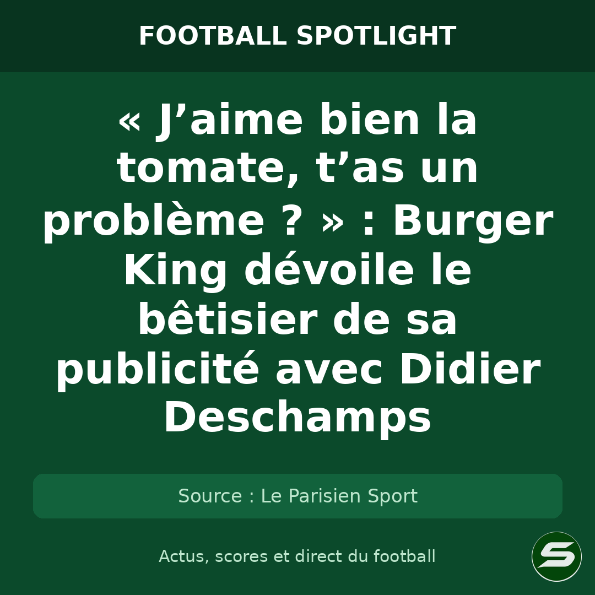
Lire la suite →2026-11-27 13:51 UTCLille-Bayern : « Paix et tranquillité », comment le club allemand tente d’apaiser la polémique des « absences passagères » de Jamal Musiala
🚨 Lille-Bayern : « Paix et tranquillité », comment le club allemand tente d’apaiser la polémique des « absences passagères » de Jamal Musiala
📰 Source : Le Parisien Sport
#Football #Actu
Lire la suite →2026-11-27 13:51 UTCLe Sénégal désigné vainqueur de la CAN 2025 : pourquoi la décision du TAS va coûter cher au Maroc
🚨 Le Sénégal désigné vainqueur de la CAN 2025 : pourquoi la décision du TAS va coûter cher au Maroc
📰 Source : Le Parisien Sport
#Football #Actu
 Lire la suite →2026-11-27 13:51 UTC
Lire la suite →2026-11-27 13:51 UTC« Elle a vécu trois vies » : : un mois après la mort de Cléa, 17 ans, sa famille et ses amis veulent perpétuer sa mémoire
🚨 « Elle a vécu trois vies » : : un mois après la mort de Cléa, 17 ans, sa famille et ses amis veulent perpétuer sa mémoire
📰 Source : Le Parisien Sport
#Football #Actu
 Lire la suite →
Lire la suite →